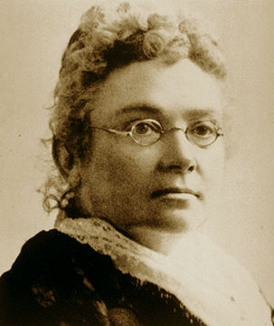

ABOUT EMPLOYER

In 1883, Women’s College Hospital was founded by Dr. Emily Stowe under the name of Woman’s Medical College. Dr. Stowe was the second woman to ever receive a medical license in Canada and was determined to provide more Canadian women with the opportunity to work as a licensed medical professional.
Today, Women’s College Hospital is a world leader in health for women, health equity, and revolutionary health system solutions. The organization aims to provide effective and equitable medical services by working hard to close gender-related and social health gaps present throughout the healthcare industry.
Women’s College Hospital has set many important healthcare milestones, some include being:
- Involved in one of the most important breakthroughs in cancer research - the discovery of the BRCA1 and BRCA2 genes as breast cancer risks
- The first Ontarian hospital to have a Sexual Assault Care Centre
- The first Ontarian hospital to have an independent Ambulatory Care Centre
- The first Ontarian hospital to use mammography as a diagnostic tool to detect breast cancer
- A collaborator in the invention of the simplified Pap test